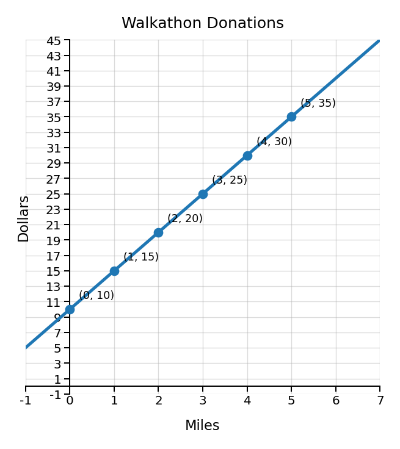
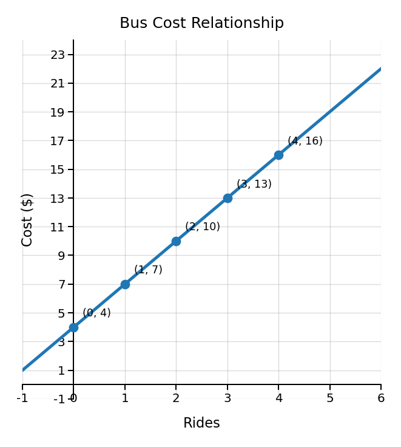
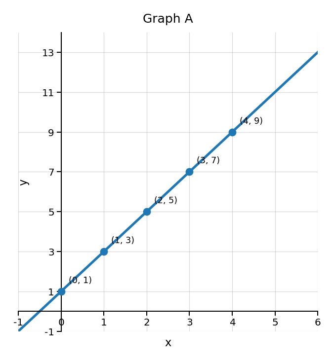
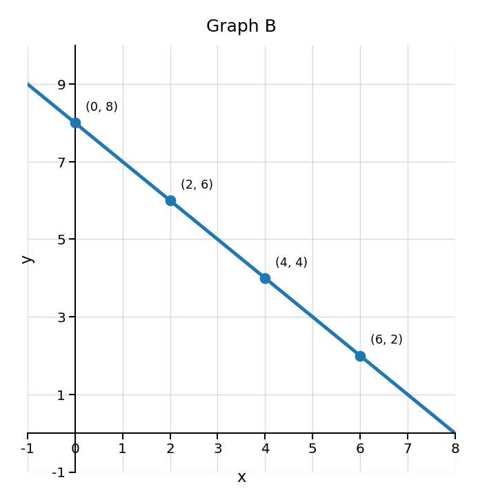

Mathematical idea: A relationship can look different in a table, graph, equation, or story, but the pattern underneath can still be the same.
Today we will practice connecting representations, explaining what changes, and using evidence to decide whether two representations match.
Students will connect tables, graphs, equations, and contexts that represent the same relationship.
I can statements
This is a long-range preview for future lessons. Do not solve it today. Instead, annotate it individually. Circle anything familiar, underline symbols or directions that seem important, and write notes about what information you think will be needed later.
As you annotate, ask yourself: What quantities are changing? How can the table, graph, equation, and context show the same pattern? What evidence would prove that two representations match? What information would make a representation not match?
Future Task
A school walkathon raises a starting donation plus the same amount for each mile walked. Three students claim they have representations for the same relationship.
The team already has \$10 in donations. They earn \$5 more for each mile walked.
$d=5m+10$, where $m$ is miles and $d$ is dollars.
| Miles | 0 | 1 | 2 | 3 |
|---|---|---|---|---|
| Dollars | 10 | 15 | 20 | 25 |

Directions
Read the introduction aloud with a partner or in a small group. As you read, annotate the text by marking important ideas, highlighting or circling key vocabulary, and writing short notes about connections, questions, or predictions in the margins.
A relationship tells how two things are connected. In math, the two things are often quantities that can change. For example, the number of rides on a bus and the total cost can be connected.
We can show the same relationship in different ways. A table shows organized input and output values. A graph shows the pattern as points or a line. An equation uses symbols to describe the rule. A context tells the story in words.
The important question is not, “Do these look the same?” The important question is, “Do these show the same relationship?” To answer that, we look for evidence. We check what starts the pattern, what changes each time, and what the numbers mean.
When you connect representations, you are building a stronger picture of the relationship. One representation may be easier to read than another, but they should all agree about how the two quantities are related.
Stop and Discuss
Each representation can tell part of the story. When they match, the numbers and the meaning should agree.
Input: the starting value you choose or measure.
Output: the value that depends on the input.
Relationship: the way the input and output are connected.
A bus pass costs \$4 to buy. Each ride costs \$3. The total cost is represented by $c=3r+4$.
| Rides, $r$ | 0 | 1 | 2 | 3 |
|---|---|---|---|---|
| Cost, $c$ | 4 | 7 | 10 | 13 |

Explain how the context, equation, table, and graph each show the starting cost and the cost per ride.
A gym charges a one-time membership fee of \$15 and then \$2 for each visit.
Write an equation for the total cost, make a quick table for $0$, $1$, $2$, and $3$ visits, and explain where the starting fee and cost per visit would appear on a graph.
Stop and Discuss
Two representations can match even if they look very different. Look for the same input-output pairs, the same starting value, and the same change.
Which graph matches the table? Use evidence from the table and the graphs.
| $x$ | 0 | 1 | 2 | 3 | 4 |
|---|---|---|---|---|---|
| $y$ | 1 | 3 | 5 | 7 | 9 |


Write a sentence that uses at least two table values as evidence.
A different table starts with $y=8$ when $x=0$ and then decreases by $1$ each time $x$ increases by $1$.
Which graph above would match that table? Explain using at least two pieces of evidence.
Stop and Discuss
A representation is more useful when we can explain what the numbers mean. We should connect numbers to the situation, not just copy them.
A water tank already has $12$ gallons in it. Water is added at a steady rate of $4$ gallons each minute.
A phone battery already has $30\%$ charge. It gains $5\%$ each minute while charging.
Stop and Discuss
Sometimes one representation has an error. To find it, compare the meaning, not just the numbers.
A school club sells shirts. The club pays a \$20 setup fee and then pays \$6 for each shirt.
A student writes the equation $c=20s+6$.
A fundraiser has a \$12 starting donation and earns \$4 for each bracelet sold. A student writes $d=12b+4$.
Stop and Discuss
Optional Reflection: Look back at the future task. Do not solve it yet.